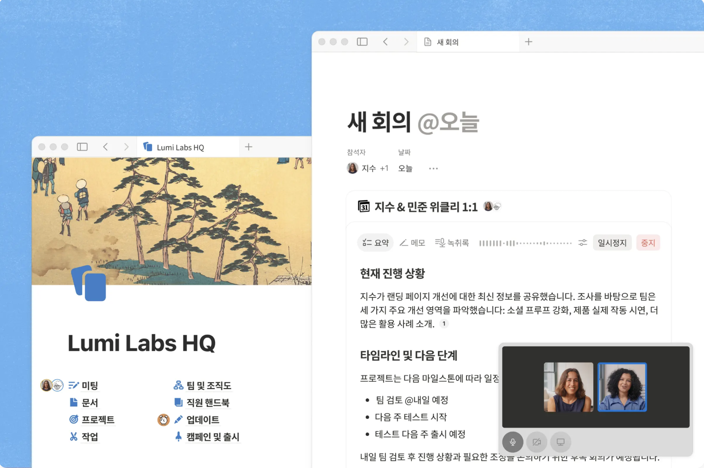

정보 수집과 정리
회의록, 결정 사항, 절차, 제품 사양까지. 업무 내용을 자동으로 기록하고 문서에 최신 정보를 반영합니다.

문서 ➔
간단한 메모도, 전문적인 사양서도, 블록을 활용해 자유롭게 작성해 보세요.
데이터베이스 ➔
어떤 정보든 체계적으로 정리하고 연결해 워크스페이스 곳곳에서 활용하세요.
AI 노트 ➔
모든 회의 내용을 하나의 공유 워크스페이스에 기록하세요.
실시간 공동 작업 ➔
댓글을 주고받고 변경 사항을 실시간으로 반영하면서, 여러 명이 동시에 작업할 수 있습니다.
데이터 동기화 ➔
Salesforce와 Jira의 실시간 데이터를 Notion으로 가져옵니다.
폼 ➔
응답 내용이 곧바로 데이터베이스에 저장됩니다.
가져오기 ➔
여러 툴에 흩어진 업무 자료를 몇 분이면 가져올 수 있습니다.
모바일 앱 ➔
어디서나 자유롭게 업무 내용을 기록하고 확인하세요.
Web Clipper ➔
다양한 웹 콘텐츠를 클릭 한 번으로 저장하세요.